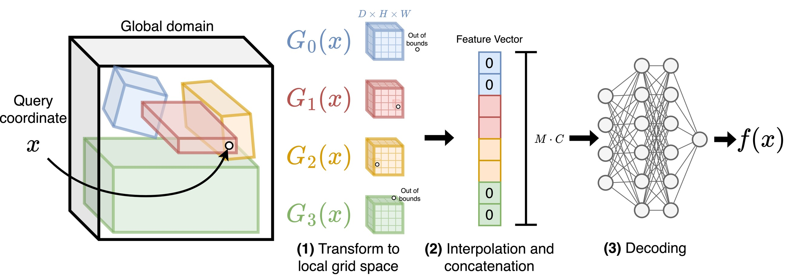

Preliminaries 05
APMGSRN: adaptively placed grids

M small feature grids, each with its own learned affine transform
A KL loss moves grid density toward regions with high error
Grid movement stops by 80% of training, then the grids refine in place
FLAT-TOP GAUSSIAN DENSITY
ρ
i
(x) ∝ det(G
i
) · exp(−½ Σ G
i
(x)
20
)
2 optimizers
grids and decoder
2 × 64
decoder MLP
Preliminaries
Seamless APMGSRN
05 / 31